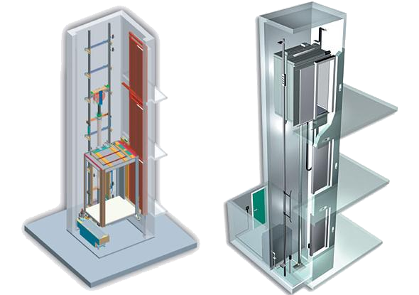

Taşıma Kapasitesi ve Bina Yüksekliği
Sistem tasarımı, kurulacağı yapının yüksekliği ve ihtiyaç duyulan taşıma kapasitesine göre belirlenir.
Hidrolik asansörler; hidrolik pompa ünitesi ile çalışan, düzgün, güvenli ve kontrollü hareket gerektiren uygulamalar için ideal çözümler sunar.
Hidrolik asansörler, tahrik yeteneğinin bir hidrolik pompa ünitesi tarafından sağlandığı, özellikle düzgün ve güvenli hareket gerektiren uygulamalar için ideal bir asansör çözümüdür. Bu sistemlerin çalışma prensibi, sıvı basıncının hareket enerjisine dönüştürülmesine dayanır.
Hidrolik asansörler; performans, tasarım esnekliği ve güvenli kullanım avantajlarıyla öne çıkar. Taşıma kapasitesi, bina yüksekliği ve yapının işlevine göre projelendirilerek uygun sistem kurgusu oluşturulur.

Hidrolik asansörler hem performans hem de tasarım esnekliği açısından birçok avantaj sunar; yapı ihtiyaçlarına göre verimli şekilde uygulanabilir.
Proje ihtiyaçlarına göre daha esnek yerleşim imkânı sunarak mimari planlamaya uyum sağlar.
Uygun proje şartlarında ekonomik kurulum ve işletme avantajı sağlayarak maliyetleri optimize eder.
Kontrollü hareket yapısı sayesinde konforlu, dengeli ve sessiz bir kullanım deneyimi sunar.
Enerji verimliliği sağlayabilir ve daha büyük kapasiteli asansör ihtiyaçlarında etkili bir çözüm olarak tercih edilebilir.
En uygun hidrolik asansörün seçimi; taşıma kapasitesi, bina yüksekliği, kullanım amacı ve kabinin harekete geçirilme şekline göre değerlendirilir.
Sistem tasarımı, kurulacağı yapının yüksekliği ve ihtiyaç duyulan taşıma kapasitesine göre belirlenir.
Kabinin harekete geçirilme şekline göre değerlendirilen temel sistemlerden biridir ve uygun projelerde tercih edilir.
Hidrolik asansör çeşitlerine bağlı olarak kullanılan bir diğer temel sistemdir ve proje gereksinimlerine göre incelenir.